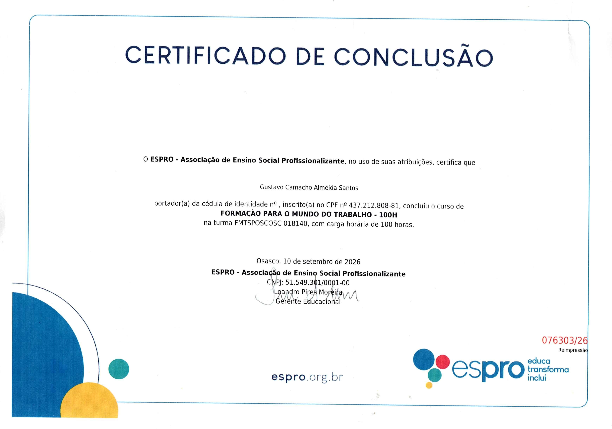
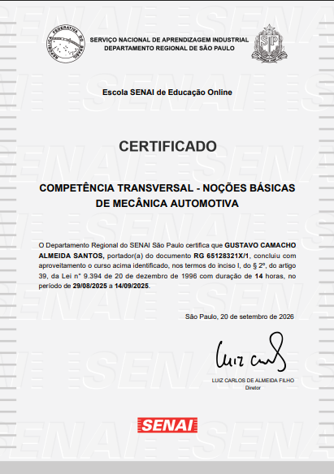
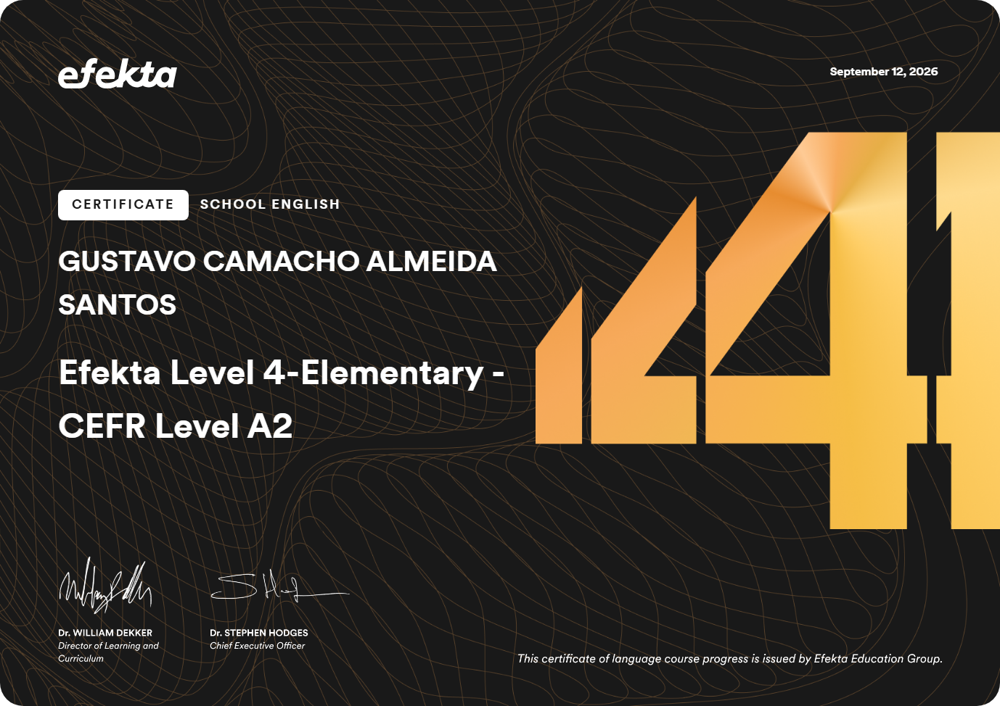

Sou estudante e estou construindo minha trajetória profissional com uma mentalidade de aprendizado contínuo. Tenho interesse por diferentes áreas, principalmente aquelas que envolvem tecnologia, administração, esportes e desenvolvimento pessoal, e procuro transformar cada experiência em uma oportunidade de adquirir novas habilidades. Tenho formação em Mecânica Automotiva Básica e Formação para o Mundo do Trabalho pela ESPRO, além de experiência prática em uma simulação empresarial como auxiliar administrativo. Essas experiências contribuíram para desenvolver minha comunicação, organização, responsabilidade com horários, trabalho em equipe e capacidade de seguir processos e aprender novas tarefas. Fora do ambiente acadêmico e profissional, também busco constantemente me desenvolver. Tenho interesse em programação, esportes e filosofia, e vejo disciplina e consistência como ferramentas importantes para evoluir em qualquer área. Estou em busca da minha primeira oportunidade profissional, não apenas para ingressar no mercado de trabalho, mas para aprender na prática, assumir responsabilidades e construir uma carreira baseada em evolução constante.
De onde eu vim
Venho da periferia e de uma família de classe baixa/média. Cresci entendendo desde cedo que as oportunidades precisam ser construídas e que o caminho profissional não vem pronto. Minha origem faz parte de quem eu sou e influenciou diretamente a forma como enxergo trabalho, responsabilidade e futuro.
O que me move
O que me move é a vontade de evoluir. Tenho curiosidade por diferentes áreas e gosto de aprender, testar meus limites e transformar aquilo que aprendo em algo prático. Não quero ficar parado no mesmo lugar: busco constantemente desenvolver novas habilidades, descobrir meus interesses e me tornar uma pessoa e um profissional cada vez mais preparado.
Também valorizo a independência e a construção do meu próprio caminho. Para mim, crescer profissionalmente não significa apenas conquistar um cargo ou ganhar dinheiro, mas adquirir conhecimento, experiência e confiança para assumir responsabilidades cada vez maiores.
Minha formação
Atualmente, estou cursando o Ensino Médio e o Curso Cívico-Militar. Também tenho formação em Mecânica Automotiva Básica, Inglês Básico e Formação para o Mundo do Trabalho (FMT) pela ESPRO. Essas experiências me permitiram conhecer diferentes áreas e desenvolver competências relacionadas à comunicação, organização, responsabilidade, trabalho em equipe e adaptação a diferentes situações.
Meus valores
Acredito que confiança é algo que se conquista através das atitudes. Valorizo responsabilidade, respeito, disciplina, honestidade e disposição para aprender. Procuro cumprir aquilo que assumo, tratar as pessoas com respeito e reconhecer quando ainda preciso aprender alguma coisa.
Também acredito que fazer o melhor possível não significa ser perfeito, mas entregar aquilo que está ao meu alcance com seriedade, atenção e vontade de melhorar.
O que busco profissionalmente
Busco construir uma carreira como um profissional confiável, respeitado e comprometido com aquilo que faz. Quero ser alguém em quem uma equipe possa confiar, tanto pela postura quanto pela qualidade do trabalho.
Estou em busca de oportunidades que me permitam aprender na prática, adquirir experiência e assumir novas responsabilidades. Meu objetivo é, dentro das condições e recursos disponíveis, sempre entregar o melhor serviço que eu puder e continuar evoluindo ao longo do caminho.
Experiência & habilidades
Habilidades
Certificados



Contatos
Fale comigo
Fico à disposição para novas oportunidades, parcerias ou apenas para trocar uma ideia. Escolha o canal que preferir acima.